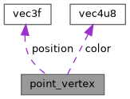

|
GL CHOCO ENGINE
|
|
GL CHOCO ENGINE
|
ポイント描画用頂点情報構造体 More...
#include <vertex.h>

Data Fields | |
| vec3f_t | position |
| vec4u8_t | color |
ポイント描画用頂点情報構造体
そのためcolorをMaterial Subsystemで管理すると、 Geometry Pipelineで確保した頂点範囲をMaterial Pipelineへ引き渡し、同じ頂点範囲へ色情報を書き込まなければならない。
この依存関係はpoint meshに固有であり、ほかのmeshではGeometryとMaterialを独立して管理できる。 mesh種別間でGeometryとMaterialの責務境界を統一し、両Pipelineを不要に依存させないため、pointごとの色情報はpoint_vertex_tに含める。
| vec4u8_t point_vertex::color |
色情報
| vec3f_t point_vertex::position |
頂点座標